Twaalf richtingen · één merk
Kies een website‑stijl.
Twaalf volledig uitgewerkte homepages — dezelfde inhoud, telkens een ander gezicht: van het vertrouwde groen/wit tot animatie & 3D, kleurvarianten en twee luxe edities met serif-typografie en champagnegoud.
Stijlrichtingen
Ontwerpstudies.
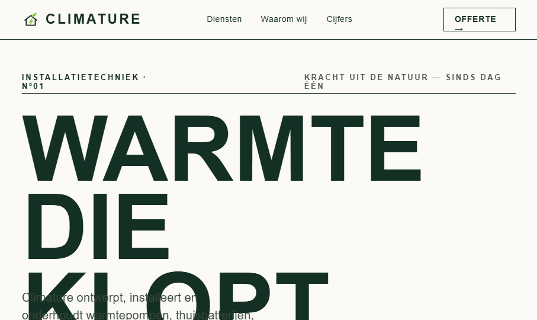
BOLD EDITORIALEditorial
01Enorme typografie, een strak magazine-grid en veel wit. Krachtig, redactioneel en zelfverzekerd.
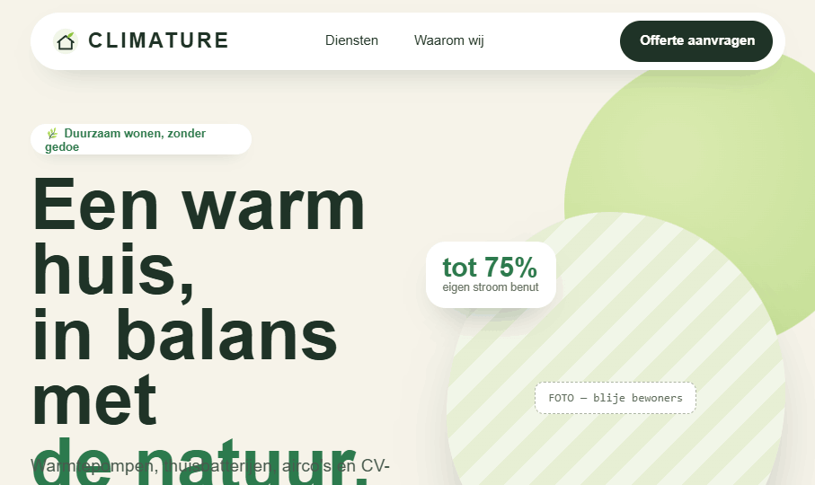
PLAYFUL ORGANICNatuurlijk
02Ronde vormen, zachte blobs en zwevende kaarten. Vriendelijk, warm en toegankelijk.
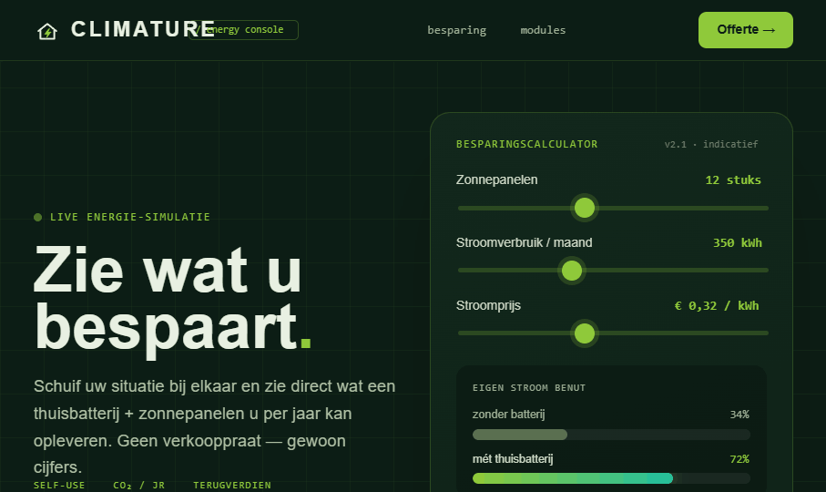
TECH / DATADashboard
03Donker, immersief en datagedreven — met een live besparingscalculator die direct meerekent.
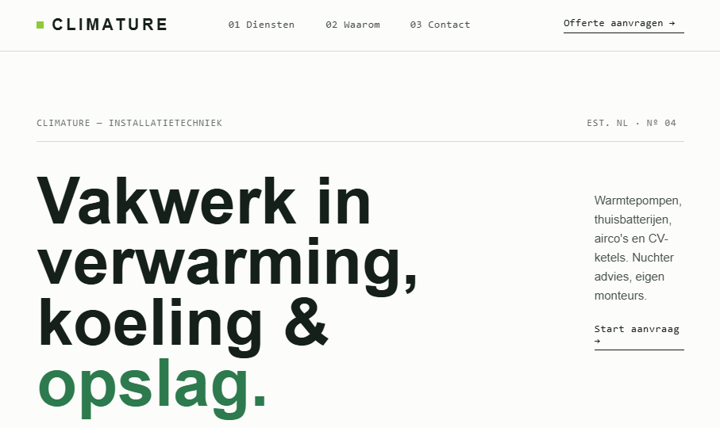
SWISS / MINIMALSwiss
04Ultra-clean met haarlijnen, een 12-koloms grid en veel rust. Precies en tijdloos.
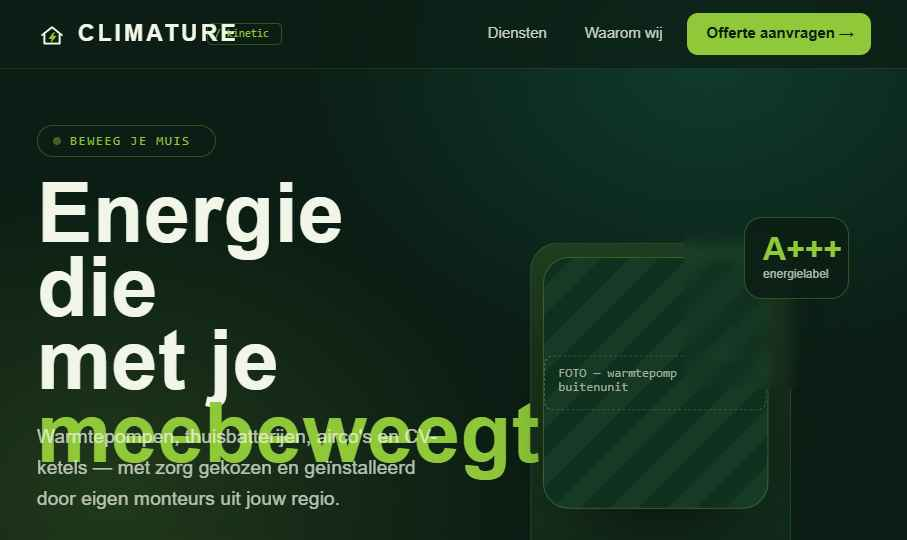
3D · PARALLAXKinetic
05Donker en immersief. De hero beweegt met je muis mee in 3D-diepte, kaarten kantelen en cijfers tellen op.
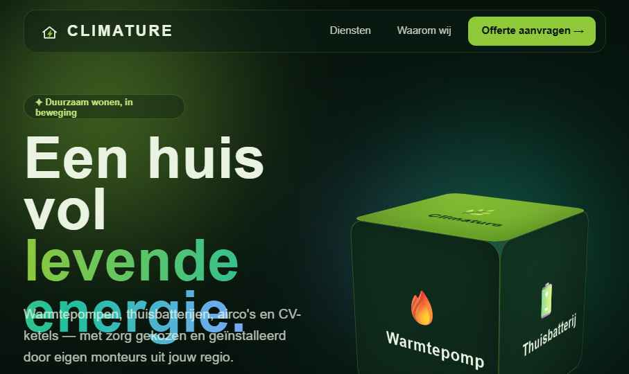
3D · GLASAurora
06Levendige aurora-gradiënten in beweging, glaspanelen en een 3D-kubus die continu door de vier diensten draait.
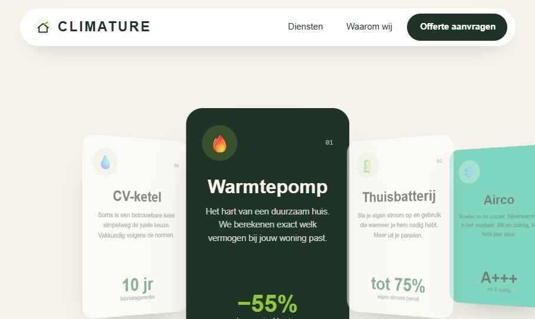
3D · COVERFLOWShowcase
07Licht en speels. Een 3D-coverflow carousel die je sleept of draait, plus kaarten die omdraaien bij hover.
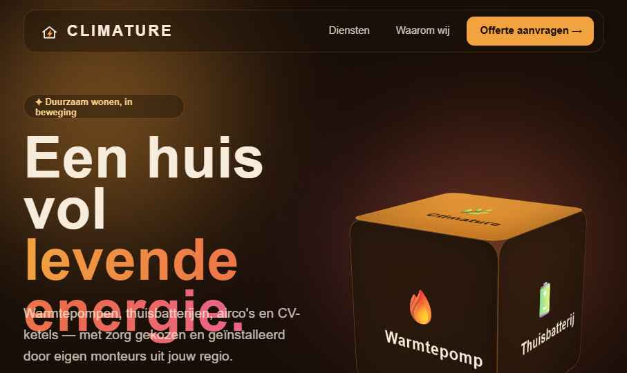
WARM · AMBERSolaris
08Dezelfde Aurora-lay-out, maar in warme zonsondergangtinten — amber, koraal en een diep espresso-bruin.
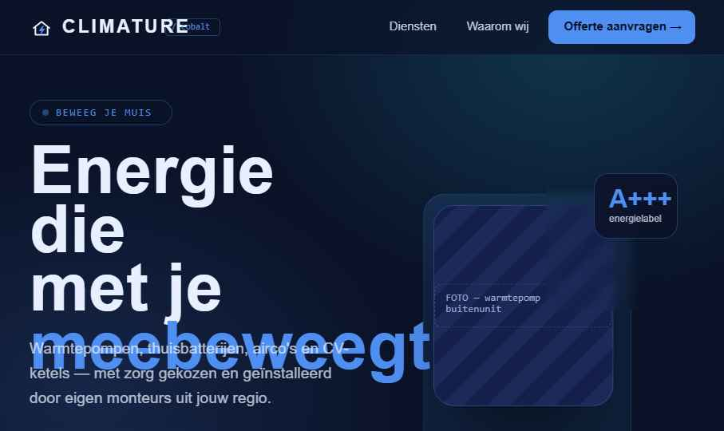
KOEL · ELEKTRISCHCobalt
09De Kinetic-lay-out in diep marineblauw met elektrisch blauw en cyaan. Koel, technisch en strak.
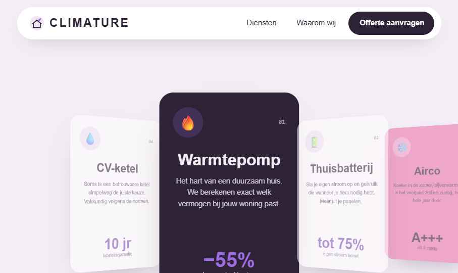
ZACHT · PASTELBloom
10De Showcase-lay-out in zachte lavendel en roze op blush. Speels, licht en vriendelijk.
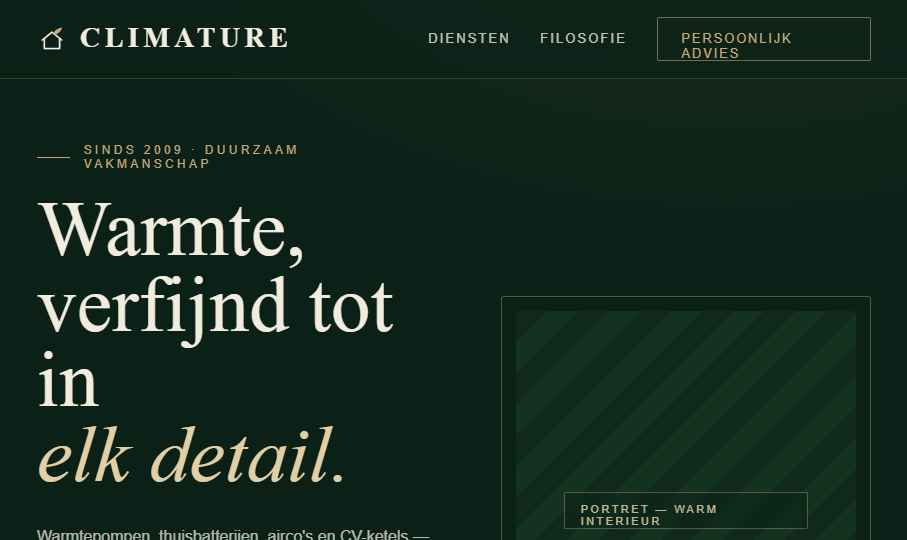
LUXE · SMARAGD/GOUDLuxe
11Verfijnde serif-typografie, smaragdgroen en champagnegoud, royale witruimte en ingetogen beweging. Premium en tijdloos.
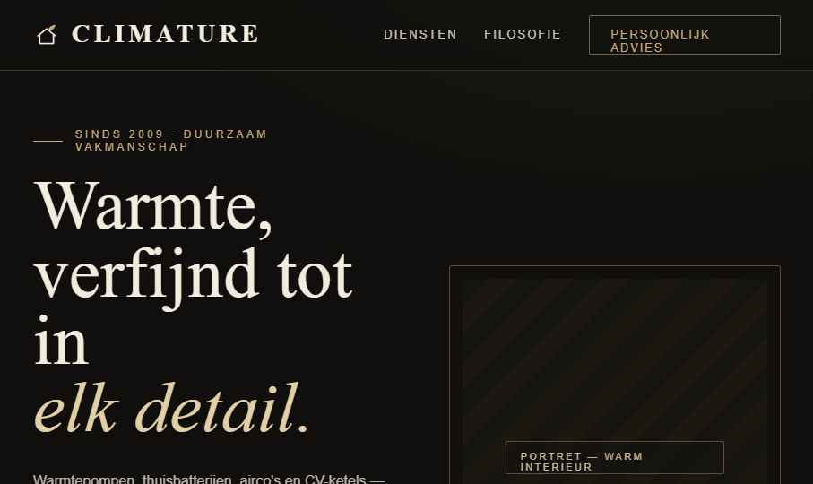
LUXE · OBSIDIAAN/GOUDNoir
12Dezelfde luxe lay-out, maar in diep obsidiaanzwart met champagnegoud. Black-tie elegantie, volledig zonder groen.